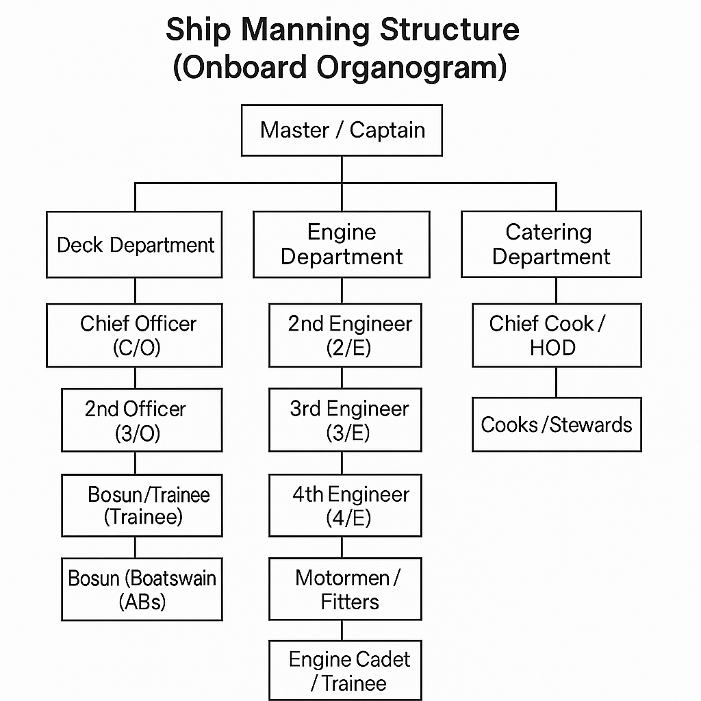

Who is a Seafarer?
A seafarer is a professional who works aboard a ship, playing a vital role in maritime operations. Seafarers include deck officers, marine engineers, electro-technical officers (ETOs), ratings, and catering staff, among others. They ensure the safe navigation, operation, and maintenance of vessels that transport goods, passengers, or perform specialized tasks like fishing and offshore services..
Mentoring Students in Secondary School Toward a Seafaring Career as Marine Engineers and Deck Officers Up to Master Mariner ⚓📊🌍
Introduction Becoming an IMO-recognized unlimited seagoing captain or Chief Engineer—also known as a Master Mariner—requires a structured path of education, training, certification, and sea service under the STCW Convention (Standards of Training, Certification and Watchkeeping for Seafarers) established by the International Maritime Organization (IMO).
The maritime industry, though often overlooked by young students, plays a vital role in global trade and logistics. A career at sea as a marine engineer or deck officer offers exciting opportunities, international exposure, and a life of discipline and adventure. However, for many secondary school students, the path to this profession remains unclear. Effective mentorship can bridge that gap; illuminating possibilities and providing a roadmap toward a fulfilling maritime career.
Understanding the Career Options Before venturing into the World of maritime career, it’s essential to understand the distinctions between two key roles:
- Marine Engineer: Responsible for operating and maintaining the ship’s propulsion systems and mechanical equipment.
- Deck Officer: In charge of navigation, cargo operations, and managing the day-to-day activities on deck.
Each role requires specialized skills, academic dedication, and practical experience.
Ship Manning Structure (Onboard Organogram)
🔍 Department Roles at a Glance
- Master/Captain:Overall in charge of the vessel, crew, navigation, and compliance.
- Deck Department:Handles navigation, cargo operations, watchkeeping, and safety.
- Engine Department:Oversees propulsion, power generation, machinery maintenance, and technical systems.
- Catering Department:Manages food service, cleanliness, and crew welfare.
Real‑Life Perks of Being a Seafarer
- Travel the world visa‑free and experience new cultures.
- High demand roles and competitive global salaries.
- Opportunities to grow into shore‑based maritime careers.
Educational Pathway
- Choose science subjects (physics, chemistry, math, technical subjects, geography).
- Enroll in an IMO‑recognized maritime academy.
- Pursue Marine Engineering or Nautical Science.
- Complete STCW certifications (safety, firefighting, navigation).
- Progress through Cadet → Officer → Chief Engineer/Captain.
Anticipated Challenges
- Physical & mental readiness for life at sea.
- Combatting stereotypes, myths & family reluctance.
- Gender inclusion—encouraging girls in maritime roles.
- Financial support—seeking scholarships and sponsorships.
Alternative Pathways (Non‑Science Students)
Determined students can follow this route:
- GP Rating Course → Sea Service → Near Coastal Voyage (NCV) Associate Course
- Pass STCW (firefighting, survival, first aid)
- Obtain OOW (NCV) or Engine Room Watchkeeping Certificate
- Advance: NCV Chief Mate → NCV Master or Chief Engineer → upgrade to Unlimited CoC
NIMASA‑Accredited Institutions (Nigeria)
- Maritime Academy of Nigeria (MAN), Oron
- Federal College of Fisheries & Marine Technology, Lagos
- Charkin Maritime Safety Centre, Port Harcourt
- Elkins Marine Training International, Owerri
- Joe Marine Institute, Effurun
- Coastal Maritime Academy, Ikoyi
📷 Image Gallery